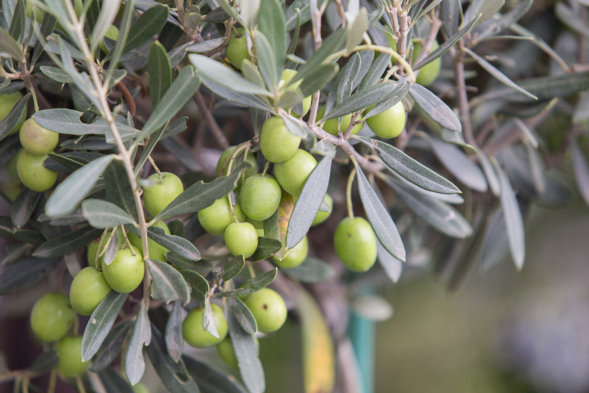
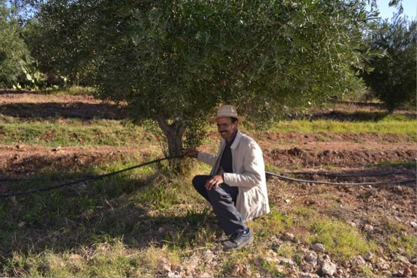

Importance et aire de culture de l’olivier au Maroc Principale espèce fruitière cultivée au Maroc, L’Olivier occupe une surface de 560.000 ha dont 220.000 ha en zone irriguée (Haouz, Tadla, Souss-Massa, Moulouya, Nador, Boulemane, Oujda, El Kelaâ, Marrakech, Chichaoua, Bénimellal Ouarzazate, Tafilalet. Figuig, Essaouira), 200.000 ha en zone de montagne (Chefchaouen, Taounate, Taza, Tanger, Tétouan, Azilal, Khénifra, Al Hoceima), 100.000 ha en zone bour favorable (Sefrou, El Hajeb, Fès, Meknès, Sidi Kacem, Gharb, Loukkos, Benslimane) et 40.000 ha dispersés entre Safi, Settat, Khémisset et Khouribga. L’Olivier contribue à l’emploi en milieu rural avec 11 millions de journées de travail annuellement. La production d’olive se situe autour de 560.000 T et permet de générer 50.000 T d’huiles d’olives et 90.000 T d’olives de table industrielles
L’olivier résiste jusqu’à -8 à -10’C en repos végétatif hivernal Mais à 0 à -1°C, les dégâts peuvent être très importants sur la floraison. A 35- 38°C, la croissance végétative s’arrête et à 4O°C et plus, des brûlures endommagent l’appareil foliacé et peuvent faire chuter les fruits, surtout si l’irrigation est insuffisante. Avec 600 mm de pluie bien répartie, l’olivier végète et produit normalement. Entre 450 et 600 mm, la production est possible à condition que les capacités de rétention en eau du sol soient suffisantes (sol profond argilo-limoneux). Avec une pluviométrie inférieure à 200 mm, l’oléiculture est économiquement non rentable. Les vents chauds au cours de la floraison, les brouillards et les fortes hygrométries, la grêle et les gelées printanières sont autant de facteurs défavorables à la floraison et à la fructification. L’olivier étant exigeant en lumière, l’insolation est à considérer dans le choix de l’orientation des arbres, la densité de plantation et les tailles d’éclaircie.
jeunes arbres: 20 à 40 kg de fumier, 80 à 100g d’N/arbre et par année d’âge, 60 à 80 g de P20S/arbre et par année d’âge et 80 à 120 g de K20/arbre et par année d’âge. arbres adultes en production: 60 à 80 kg de fumier, 600 à 1500 g d’N par arbre (5 à 7 kg de sulfate d’ammoniaque), 800 à 1000 g o P2O5 par arbre (1,8 à 2,2 kg de super triple 45%) et 1000 à 1500 g K20 par arbre (2 à 3kg de sulfate de potasse). Irrigation En dehors des mesures d’évapotranspiration et en l’absence d’appareil de mesure ou de contrôle (tensiomètres, bac californien), l’expérience personnelle de l’oléiculteur permet seule, par un compromis permanent entre la nature du sol la densité de plantation et les variations climatiques, d’apporter les doses nécessaires aux besoins en eau de l’olivier. Dans certaines zones où les précipitations sont de 450 à 650 mm/an, les apports d’eau en gravitaire sont estimés à 6000 à 8500 m3/ha/an entre Mars et Septembre. En irrigation localisée et pour une oliveraie de 400 arbres/ha (olive de table), le volume d’eau apporté est de 3200 m3/ha/an (capillaire d’un débit de 4 l/heure avec 4 goûteurs/arbre, 8-10 h par irrigation tous d les 3 jours). La durée de fonctionnement du système d’irrigation est de 5 à 6 mois/an.
Les anciens aimaient les grands arbres car ils pensaient que plus l’arbre était important ...
On dénombre plus d’une centaine de variétés d’olives, mais en France on n’en cultive guère ...
On dénombre plus d’une centaine de variétés d’olives, mais en France on n’en cultive guère ...
LES LIVRES A LIRE SUR L’OLIVIER, L’OLIVE ET L’HUILE D’OLIVE